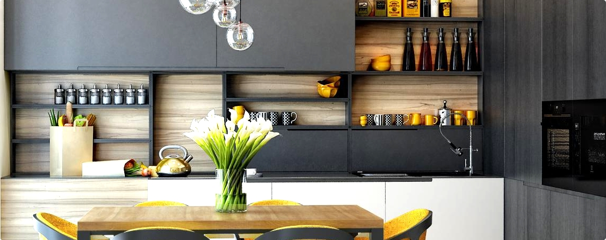
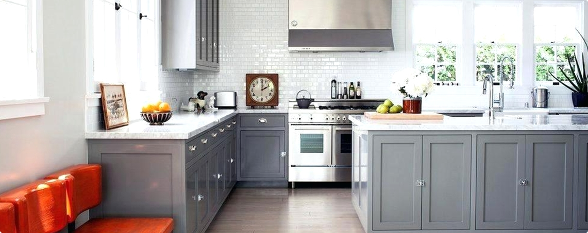
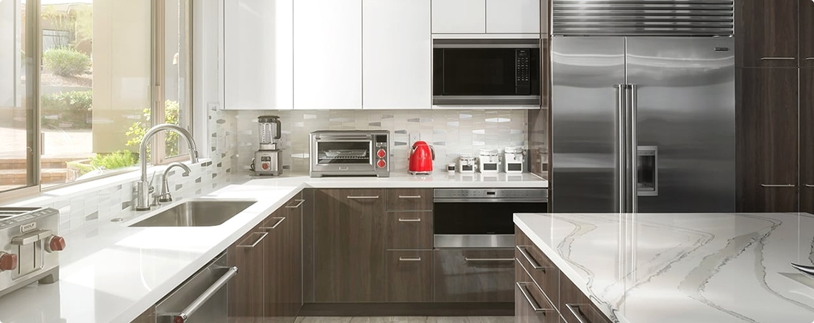
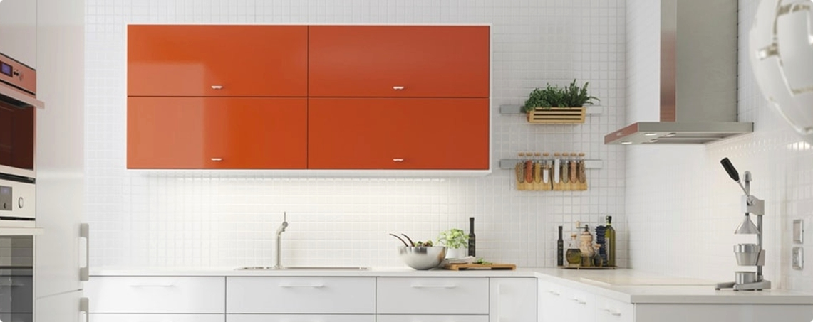

Смеситель с выдвижным изливом MINTA 32918000

Начнем с преимуществ и недостатков
К плюсам кухни в двухцветном дизайне является его легкое эстетическое восприятие, простой и нечем не нагруженный интерьер. Казалось бы простой = скучный и обыденный, но нет. Именно простота придает интерьеру элитного трендового
вида.
Причем данный прием применим для большинства стилей дизайна. Два цвета используются для классических, этнических, урбанистических и современных направлений дизайна. Также можно использовать в комнатах разной площади и разной освещенности.
С умом подобранные контрастные цвета могут компенсировать нехватку света и добавят яркие элементы в интерьер.

Чтобы вид кухни не сталь слишком скучным при использовании двух цветов можно добавить по одному
оттенку от первого и второго цвета.
Выполнение интерьера кухни в двух цветах дает большою свободу для дизайнера который живет в каждом из нас. К примеру с помощью двух цветов можно зонировать пространство, не разбивая при этом целостность комнаты. Такой вариант хорошо
подойдет для квартир-студий, маленьких и больших кухонь-гостинных.

Сложность подбора мебели и аксессуаров по цвету — главный недостаток. Кажется надуманным и не правдоподобным, особенно в наше время, когда можно найти и купить что угодно. Но это пока Вы сами не начнете подбирать мебель, мойки,
кухонные смесители и прочее под дизайн-проект будущей кухни.
Ко второму минусу можно отнести сложность подбора двух цвет для каждого члена семьи. К примеру, розовый и белый не подойдет для мужчин, темные цвета не лучший вариант для пожилых людей, нейтральные оттенки могут превратить кухню
в подобие больничной палатки.

Стиль интерьера
Как было сказано в начале статьи двухцветные кухни достаточно легко выполнить практически в любых стилях. Но лучше всего для них подходят современные стилистики, у которых на первый план выходит простота и однотонные материалы
с необычной текстурой.
Такие интерьеры выполняются с минимальным количеством лишних предметов, за счет чего проще комнату выполнить в двух цветах. К таким стилям относится минимализм и модерн.

Другие стили интерьера тоже могут хорошо смотреться в двухцветном исполнении, нужно только добавить их отличительные черты. К классике нужно добавить позолоту, лепнину и массивную мебель.
Прованс требует использовать натуральные материалы и цвета. В стиле лофт нужно соблюсти некую грубость в интерьере. Выставить на показ трубы, вентиляцию, стены должны быть без какой-либо обделки или специально декорированные под
бетон или кирпич. Подбираем строгую, лаконичную мебель и все, лофт готов.
P.S. Если хотите посмотреть на примеры интерьеров от профессиональных дизайнеров переходите в
Идеи дизайнов.